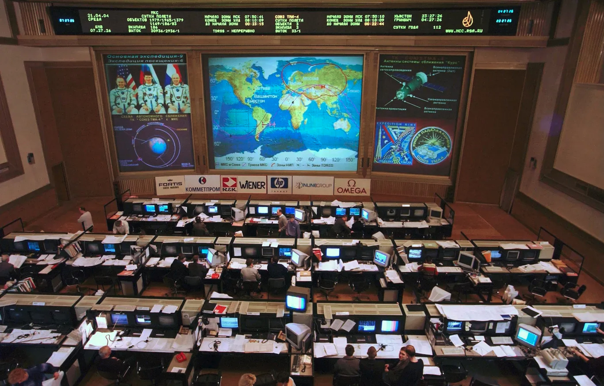

▸ BocaOS — Sistema Operativo
El framework que gobierna cómo Paisanos planifica, refina, ejecuta y entrega el ecosistema digital de Boca Juniors.
KERNEL: Estrategia anti-fraude 2026
SCHEDULER: Pipeline refi → Jira
RUNTIME: 3 flujos paralelos
RELEASE: QA → Cliente → Deploy
────────────────────────────
Métrica Norte: Distribución temporal ventas 20min
Target Q4: <25% ventas en 5min
Apuestas: Queue-IT · WAF · Middleware · Stepper
────────────────────────────
● Sistema operativo: ACTIVO
● Temporada: 2026
Contexto y Apuestas
Problema
Bypass de QueueIT. 60-70% de ventas en 5min por bots. Socios legítimos no acceden.
Métrica Norte
Distribución temporal de ventas en 20min. Target Q4: <25% en primeros 5 minutos.
A. Mitigación desde Queue-IT
Configuración del filtrado de bots desde el dashboard de QueueIT.
✓ Implementado Q1
B. Endurecimiento de WAF
Límites de peticiones por IP para evitar scraping.
→ En progreso
C. Middleware de la Aplicación
Vinculación de QueueIT IDs con usuarios autenticados para evitar la reutilización de cookies.
→ En progreso
D. Stepper
Pasos obligatorios. Bloquear /checkout directo.
→ En progreso
Matriz Go / No-Go
Qué SÍ
- ✓ 3 protecciones core
- ✓ Mejoras anti-reventa
- ✓ Métricas end-to-end
- ✓ Mejoras checkout
- ✓ Reportería fraude
Qué NO
- ✕ Features sin impacto en seguridad
- ✕ Tocar backend Boca
- ✕ Bloquear socios auto
- ✕ Cambios gráficos sensibles
| Criterio | Go | No Go |
|---|---|---|
| Impacto | Reduce bypass | Sin impacto |
| Viabilidad | Front + Gateway | Cambios estructurales |
| Control | E2E controlado | Fuera de control |
De la reunión a Jira
FLUJO DE CAPTURA
1. Transcripción
Meet se graba → texto crudo
2. Notion
PM estructura resumen
3. Enriquecimiento
PM agrega brief + feedback cliente
4. Jira
PM carga tickets — Devs solo leen
5. Task Reporting
Cliente ve roadmap compartido
Nuevas Funcionalidades
01. DEFINICIÓN
Kickoff + Brief
PM + Account → Notion
Filtro Go/No-Go
Directiva marco
02. REFINAMIENTO
Refi Técnica
PM + Devs → riesgos
Refi UX/UI
PM + Design → experiencia
Carga Jira
Solo PM escribe
03. EJECUCIÓN
Planning + Dev
Sprint asignado
Walkthrough
Validación interna
QA Interno
Criterios de aceptación
Cliente Valida
SCOPE LOCK
Deploy
Release + comunicación
Fixes y Cambios Menores
01. IDENTIFICACIÓN
Task Reporting
PM o Cliente levanta
Refi General
Revisión rápida
Carga Jira
Backlog operativo
02. EJECUCIÓN
¿Walkthrough?
PM decide
QA
Verificar
Deploy Rápido
Producción → Log Jira → Reporting
Gestión de Bugs
01. TRIAGE
Reporte Typeform
Formulario estructurado
Bug Triage
Priorizado o Descartado
02. RESOLUCIÓN
Carga + QA
Fix asignado
Deploy Fix
Restaurar estabilidad
Descartado → documentar motivo en Notion + notificar reportante
Estrategia de Diseño Iterativo
Para evitar trabarnos buscando la "perfección" inicial, proponemos un enfoque de fases:
FASE 1. Solución Funcional (La versión "Cautelosa")
Objetivo: Velocidad y seguridad
Se presenta la propuesta más sencilla que cumple el objetivo central. Ideal para destrabar y salir a producción rápido — la versión más chica para que funcione.
FASE 2. Propuesta Superadora (Mejora Continua)
Objetivo: Evolución y calidad
En paralelo o tras la Fase 1, presentamos una versión mejorada con UX refinado y nuevas features. Iteración basada en datos y feedback real.
Tableros de Control

Click en la imagen para iniciar la secuencia
Resultados 2026
| Métrica | Baseline | Target |
|---|---|---|
| Ventas 5min | 60-70% | <25% |
| Cookies compartidas | Sin medición | <1% |
| Bypass directo | Abierto | 100% bloqueado |
| Evasión de fila | Sin validar | 100% bloqueado |
| Checkout time | <2min (bot) | 3-5min (humano) |
| Trazabilidad | 0% | 100% |
| Errores 5XX | Inconsistente | <2% |